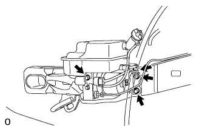
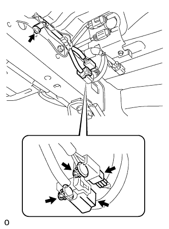
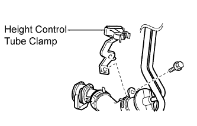
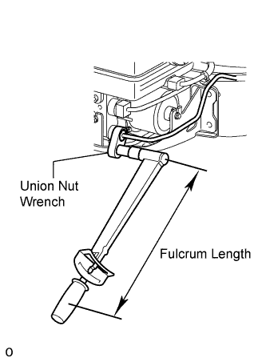
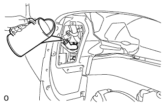
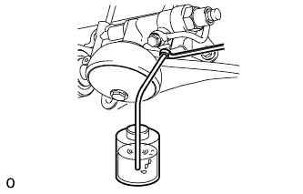
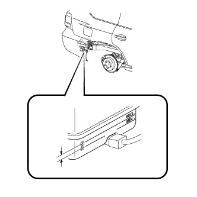
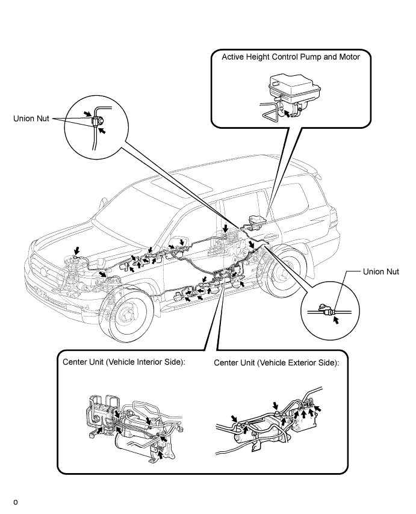
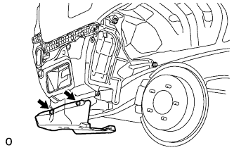

ACTIVE HEIGHT CONTROL PUMP AND MOTOR > INSTALLATION |
| 1. INSTALL HEIGHT CONTROL PUMP AND MOTOR ASSEMBLY |
 |
Install the pump and motor with the 3 bolts.
 |
Connect the 2 connectors and 3 clamps.
| 2. INSTALL HEIGHT CONTROL TUBE CLAMP |
 |
Install the tube clamp with the 2 bolts.
Connect the reservoir hose to the tube clamp.
| 3. CONNECT REAR NO. 6 HEIGHT CONTROL TUBE |
 |
Using a union nut wrench, connect the control tube to the pump and motor.
| 4. BLEED AIR FROM SUSPENSION FLUID |
 |
With the engine stopped, fill the reservoir tank with fluid.
With the vehicle on a level surface, start the engine and set the vehicle height to NORMAL with the suspension control switch.
When the vehicle height becomes NORMAL and the pump stops, stop the engine.
 |
Connect a hose to the bleeder plug of the front left side or right side control valve, then loosen the bleeder plug.
After the fluid containing air stops coming out, retighten the bleeder plug.
 |
Connect a hose to the bleeder plug of the rear left side or right side control valve, then loosen the bleeder plug.
After the fluid containing air stops coming out, retighten the bleeder plug.
Repeat the previous 4 procedures until the fluid containing air stop coming out.
| 5. CHECK FLUID LEVEL IN RESERVOIR |
 |
With the vehicle empty, after setting the vehicle height to NORMAL from LO, check the indicator to make sure the vehicle height is NORMAL and check that the fluid level in the reservoir tank is within the specified range (MAX, MIN).
| 6. INSPECT FOR SUSPENSION FLUID LEAK |
Check that the union nuts shown in the illustration are tightened to the specified torque.
Check for fluid leakage from the parts and connections.

| 7. INSTALL FUEL TANK FILLER PIPE PROTECTOR |
 |
Using a T30 "TORX" socket wrench, install the pipe protector with the 3 screws and grommet.
Install the new grommet.
| 8. INSTALL NO. 1 LUGGAGE COMPARTMENT SIDE COVER PROTECTOR |
 |
Install the protector with 2 new grommets.
Install the 2 screws.
| 9. INSTALL REAR BUMPER COVER |
for Standard:
Install the bumper cover (Click here).
w/ Towing Hitch:
Install the bumper cover (Click here).
w/ Pintle Hook:
Install the bumper cover (Click here).
| 10. INSTALL REAR QUARTER PANEL MUDGUARD RH |
 |
Install the mudguard with the clip.
Using a T30 "TORX" socket, install the 7 screws.